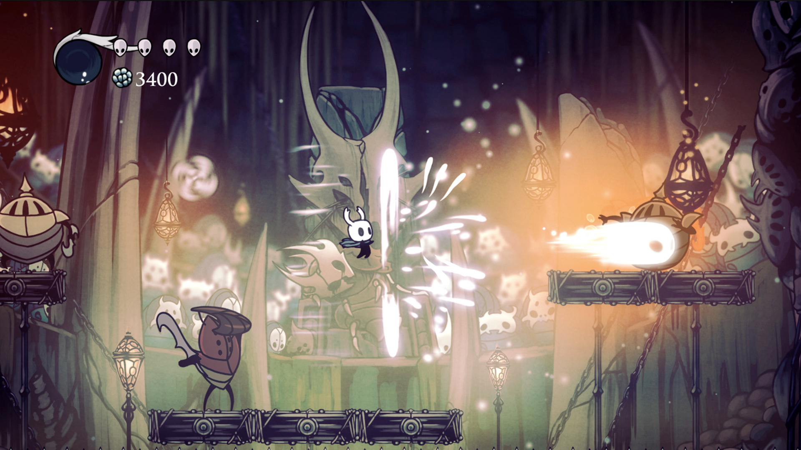
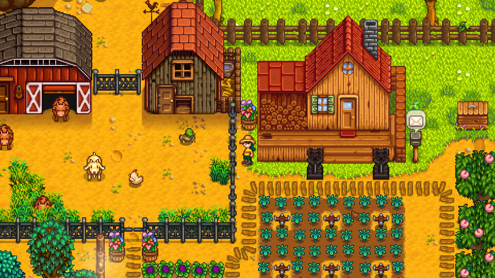

ВИДЕОИГРЫ / ЛИЧНЫЙ ВЫБОР
Ещё один
мир.
Твой следующий.
Для вечера в одиночку, приключения с другом или истории, которую не хочется отпускать.
Найти свою игру ↗
В ФОКУСЕ
01 / 12Hollow Knight
Заблудиться. Найти путь. Открыть больше.
С ЧЕГО НАЧНЁМ?
Какой у тебя сегодня настрой?
Выбери направление.
Остальное найдётся в каталоге.
РАЗНЫЕ ИГРЫ. РАЗНЫЕ ВПЕЧАТЛЕНИЯ.
С чего можно начать

НЕ ОБЯЗАТЕЛЬНО СПЕШИТЬ
Иногда лучший план —
посадить ещё одну грядку.
В Stardew Valley есть место собственному ритму. Работайте на ферме, знакомьтесь с жителями и исследуйте долину.
ТВОЯ ПОДБОРКА
Сохрани то, что зацепило.
Добавляй игры в избранное и возвращайся к ним позже.
Список хранится в этом браузере, без регистрации.